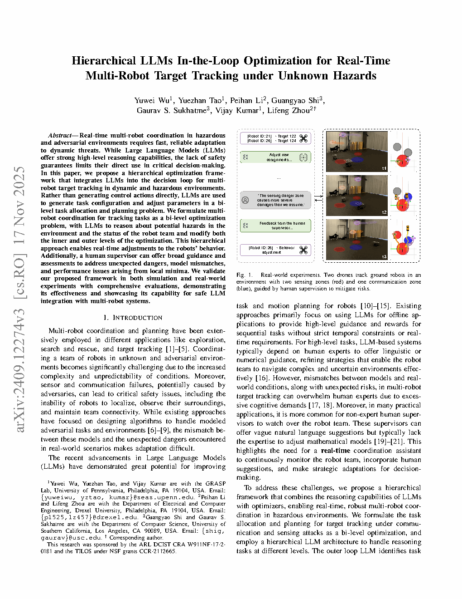
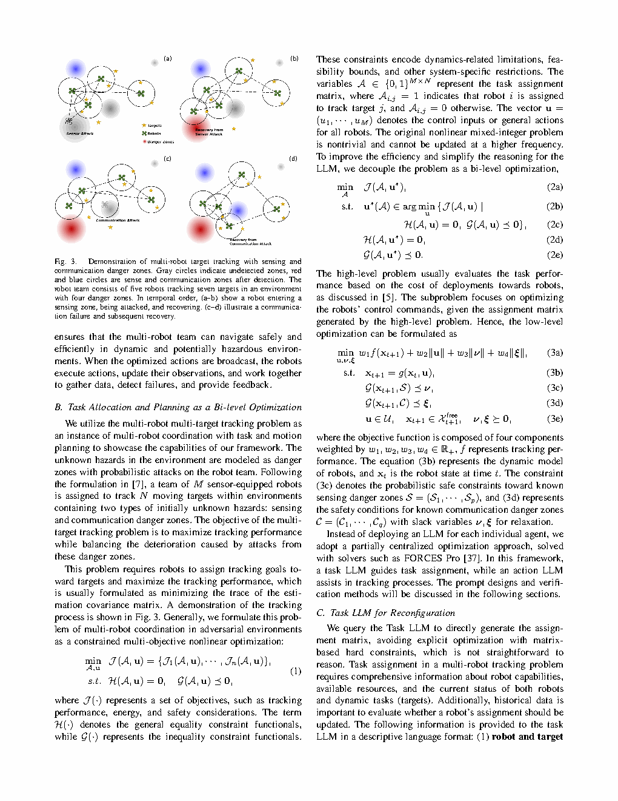

| Title | Hierarchical LLMs In-the-Loop Optimization for Real-Time Multi-Robot Target Tracking under Unknown Hazards（未知危险环境下实时多机器人目标跟踪的分层LLM在环优化） |
| Authors | Yuwei Wu, Yuezhan Tao, Peihan Li, Guangyao Shi, Gaurav S. Sukhatme, Vijay Kumar, Lifeng Zhou |
| Affiliation | 宾夕法尼亚大学（University of Pennsylvania）GRASP 实验室（Wu, Tao, Kumar）；Drexel University（Li, Zhou）；University of Southern California（Shi, Sukhatme） |
| Venue | arXiv preprint（arXiv:2409.12274v3），2025年11月 |
| DOI / Links | arXiv:2409.12274v3 | 资助：ARL DCIST CRA + NSF TILOS | GRASP Lab, Penn Engineering |
| TL;DR | 提出了一种分层LLM在环优化框架，将大语言模型（LLM）集成到多机器人目标跟踪的决策回路中。LLM不直接生成控制动作，而是作为高层推理器观察环境状态和机器人团队状态，在双层优化（外环任务分配 + 内环轨迹规划）中动态调整任务配置和优化参数。人类监督者可以在遇到意外危险或局部最优时提供高层指导。在动态危险环境中实时运行，LLM负责理解危险语义并调整优化结构，优化求解器负责生成安全可行的控制。仿真和真实实验（两架无人机跟踪两个地面机器人）验证了框架的实时适应性和鲁棒性。 |
| 灵感来源 | 启发了什么洞察 | 类型 |
|---|---|---|
| 双层优化理论（Stackelberg 博弈、分层规划） | 多机器人目标跟踪自然分解为两层：离散分配（哪个机器人跟踪哪个目标）和连续控制（每个机器人如何移动）。与求解难以处理的联合 MINLP 不同，LLM 管理外层分配层，而数值求解器运行内层控制层——各自以适当的频率运行。 | 架构 |
| LLM 作为数值优化的辅助工具（奖励设计、超参数调节） | LLM 可以成为"优化伴侣"而非"优化替代品"。LLM 识别环境变化并建议参数调整，但实际的约束满足和最优性由数值求解器保证。这消除了 LLM 直接控制的可靠性问题。 | 方法 |
| 复杂多机器人操作中的人类监督控制 | 非专家人类监督者无法直接调整数学优化参数，但他们可以提供自然语言反馈（如"更积极一些"、"避开那片区域"）。LLM 充当翻译层，将人类直觉转化为形式化的优化参数变化——桥接自然语言和数值优化。 | 策略 |
| 控制系统层级：慢外环（规划）+ 快内环（控制） | 时序分解反映了经典控制架构：Task LLM 0.05Hz（规划层）、Action LLM 0.2Hz（战术调整层）、MPC 求解器 10Hz（实时控制层）。这种三层频率分解（200:4:1 比例）确保每个模块在其自然时间尺度上运行，同时维持整体系统一致性。 | 系统 |
flowchart TB
subgraph INPUT["Input Layer"]
direction LR
STATE["Robot States · pos, vel, sensor health"]
TARGET["Target States · pos, vel, class"]
DANGER["Hazard Map · Sensing zones + Communication zones"]
HUMAN["Human Supervisor · optional NL feedback"]
end
subgraph OUTER["Outer Loop · Task LLM · 0.05 Hz"]
direction LR
TASK_PROMPT["System Prompt: You are a task allocation optimizer"]
TASK_CTX["Context: robot capabilities + target positions + hazard map + 5-step history"]
TASK_OUT["Output: Assignment Matrix A (binary)"]
TASK_VERIFY["Validation: beta(A) ≤ 0? Capacity + coverage constraints"]
end
subgraph INNER["Inner Loop · Action LLM · 0.2 Hz"]
direction LR
ACT_PROMPT["System Prompt: You are a multi-objective weight tuner"]
ACT_CTX["Context: current state + previous weights + performance feedback"]
ACT_OUT["Output: Weight vector (w1, w2, w3, w4)"]
ACT_VERIFY["Validation: weights within empirical bounds?"]
end
subgraph SOLVER["Optimization Solver · FORCES Pro MPC · 10 Hz"]
direction LR
MPC["MPC: min w1·tracking_err + w2·‖u‖ + w3·‖ν‖ + w4·‖ξ‖"]
CONSTRAINTS["Constraints: dynamics + sensing safety + comm safety + collision"]
CMD["Control Commands: u → each robot"]
end
subgraph FEEDBACK["Feedback Loop"]
direction LR
EXEC["Robots execute commands · update states"]
UPDATE["Detect new hazards · attacks on sensors/comm"]
PERF["Performance: tracking covariance trace + attack counts"]
end
STATE --> TASK_CTX
TARGET --> TASK_CTX
DANGER --> TASK_CTX
HUMAN -.->|"async NL input"| TASK_CTX
HUMAN -.->|"async NL input"| ACT_CTX
TASK_PROMPT --> TASK_CTX --> TASK_OUT --> TASK_VERIFY
TASK_VERIFY -->|"pass"| MPC
TASK_VERIFY -->|"fail: retry"| TASK_CTX
ACT_PROMPT --> ACT_CTX --> ACT_OUT --> ACT_VERIFY
ACT_VERIFY -->|"pass"| MPC
ACT_VERIFY -->|"fail: use previous"| MPC
STATE --> MPC
CONSTRAINTS --> MPC --> CMD --> EXEC --> UPDATE --> PERF
PERF --> ACT_CTX
UPDATE --> STATE
classDef input fill:#fef7ed,stroke:#f59e0b,stroke-width:2px,color:#92400e
classDef outer fill:#f0ebfd,stroke:#8b5cf6,stroke-width:2px,color:#6d28d9
classDef inner fill:#e8f0fe,stroke:#3b82f6,stroke-width:2px,color:#1d4ed8
classDef solver fill:#e6f7ee,stroke:#10b981,stroke-width:2px,color:#047857
classDef feed fill:#ffe4e6,stroke:#f43f5e,stroke-width:2px,color:#be123c
class STATE,TARGET,DANGER,HUMAN input
class TASK_PROMPT,TASK_CTX,TASK_OUT,TASK_VERIFY outer
class ACT_PROMPT,ACT_CTX,ACT_OUT,ACT_VERIFY inner
class MPC,CONSTRAINTS,CMD solver
class EXEC,UPDATE,PERF feed
flowchart TB
subgraph HIGH["10 Hz · MPC Solver · Control Layer"]
direction LR
H1["Receive A and (w1,w2,w3,w4) from LLMs"] --> H2["Solve MPC: optimal control over horizon H"]
H2 --> H3["Broadcast control commands to all robots"]
H3 --> H4["Robots execute: state transition with dynamics"]
H4 --> H5["Generate performance feedback: tracking error, attack count"]
end
subgraph MID["0.2 Hz · Action LLM · Weight Tuning Layer"]
direction LR
M1["Receive: tracking error + control energy + safety violations"] --> M2["Action LLM reasoning: assess objective importance"]
M2 --> M3["Adjust weights: w1 for tracking, w3 for sensing safety, w4 for comm safety"]
M3 --> M4["Empirical bound filtering → output valid weights"]
end
subgraph LOW["0.05 Hz · Task LLM · Assignment Layer"]
direction LR
L1["Receive: global state + hazard map + 5-step history + human feedback"] --> L2["Task LLM reasoning: analyze need for reassignment"]
L2 --> L3["Generate new assignment matrix A or keep current"]
L3 --> L4["Validate: capacity constraint and coverage constraint"]
L4 --> L5["If A infeasible: re-prompt LLM with constraint violation info"]
end
subgraph HUMAN_LAYER["Human Feedback · Asynchronous"]
direction LR
HUM1["Performance: 'focus on tracking targets'"] --> HUM2["Risk: 'sensing zone more dangerous than assumed'"]
HUM2 --> HUM3["Specific: 'drone 21 should track target 122'"]
end
LOW -->|"assignment A"| HIGH
MID -->|"weights w"| HIGH
HIGH -->|"performance metrics"| MID
HIGH -->|"state + history"| LOW
HUMAN_LAYER -.->|"natural language"| LOW
HUMAN_LAYER -.->|"natural language"| MID
classDef high fill:#e6f7ee,stroke:#10b981,stroke-width:2px
classDef mid fill:#e8f0fe,stroke:#3b82f6,stroke-width:2px
classDef low fill:#f0ebfd,stroke:#8b5cf6,stroke-width:2px
classDef human fill:#fef7ed,stroke:#f59e0b,stroke-width:2px
class H1,H2,H3,H4,H5 high
class M1,M2,M3,M4 mid
class L1,L2,L3,L4,L5 low
class HUM1,HUM2,HUM3 human
flowchart TD
subgraph INIT["Initialization"]
I1["Deploy M UAVs · N moving targets · unknown hazard zones"] --> I2["Initial assignment: Task LLM first inference → generate A₀"]
I2 --> I3["Initial weights: Action LLM sets default (w1,w2,w3,w4)"]
I3 --> I4["Start MPC loop with initial configuration"]
end
subgraph OPERATION["Runtime Closed-Loop Operation"]
direction LR
O1["Timestep t: robots publish observations"] --> O2{"t mod 3 == 0? Action LLM trigger"}
O2 -->|"Yes"| O3["Action LLM updates weights based on recent performance"]
O2 -->|"No"| O4{"t mod 9 == 0? Task LLM trigger"}
O3 --> O4
O4 -->|"Yes"| O5["Task LLM evaluates reassignment need"]
O4 -->|"No"| O6["MPC solver: receding horizon optimization"]
O5 --> O6
O6 --> O7["Execute first control step on each robot"]
O7 --> O8["Robots move · sensors update · detect new hazards?"]
O8 --> O9{"New hazard detected or robot attacked?"}
O9 -->|"Yes"| O10["Update hazard map · force Task LLM reassignment"]
O9 -->|"No"| O11{"Human feedback received?"}
O11 -->|"Yes"| O12["Inject human feedback into LLM prompts · adjust params"]
O11 -->|"No"| O1
O10 --> O1
O12 --> O1
end
subgraph ADAPT["Hazard Adaptation Scenarios"]
direction LR
A1["Robot enters sensing danger zone → attacked → sensor degraded"] --> A2["Task LLM: remove damaged robot from critical assignments"]
A2 --> A3["Action LLM: increase w3 → more conservative about sensing zones"]
A3 --> A4["Other robots take over tracking · team adapts"]
end
subgraph RECOVER["Recovery Scenarios"]
direction LR
R1["Damaged robot recovers → rejoins team"] --> R2["Task LLM: re-add robot to assignment pool"]
R2 --> R3["Action LLM: reduce w3 → less conservative if hazard resolved"]
end
INIT --> OPERATION
OPERATION --> ADAPT
ADAPT --> RECOVER
classDef init fill:#fef7ed,stroke:#f59e0b,stroke-width:2px
classDef op fill:#e8f0fe,stroke:#3b82f6,stroke-width:2px
classDef adapt fill:#ffe4e6,stroke:#f43f5e,stroke-width:2px
classDef recover fill:#e6f7ee,stroke:#10b981,stroke-width:2px
class I1,I2,I3,I4 init
class O1,O2,O3,O4,O5,O6,O7,O8,O9,O10,O11,O12 op
class A1,A2,A3,A4 adapt
class R1,R2,R3 recover
| 类别 | 内容 | 维度 / 格式 |
|---|---|---|
| 输入（LLM） | 实时机器人/目标状态（位置、速度），已知危险区地图，5 步历史记录，可选人类自然语言反馈 | 每个 LLM 的结构化文本提示；状态向量（位置、速度、故障状态） |
| 输入（优化器） | 来自 Task LLM 的任务分配 A + 来自 Action LLM 的权重向量 w + 机器人动力学模型 + 当前状态估计 | A: 二值矩阵 MxN; w: 4 维实向量; 动力学: 非线性模型 |
| 输入（人类，可选） | 自然语言引导："更积极一些"、"避开感知区"、"无人机 21 应专注于目标 122"、"感知危险比我们想的更严重" | 自由格式文本，异步，任意粒度 |
| 输出 | 所有机器人的安全可行控制指令：滚动时域内的位置/速度序列 + 当前任务分配 | 连续控制指令（M 个机器人 x 控制维度）+ 离散分配 A |
| 目标 | 最大化目标跟踪精度（最小化估计协方差迹）同时最小化感知/通信攻击次数，控制能量消耗，并适应动态发现的危险 | 多目标：跟踪性能 vs 能量 vs 感知安全 vs 通信安全 |
这是一个在线多机器人协调与控制问题，集成任务分配（组合优化）、运动规划（连续优化）和安全约束（未知危险下的概率安全）。核心创新在于LLM 不输出控制——它充当优化框架内的"智能参数调节器"。LLM 在语义层面理解环境变化（如"感知危险区的破坏力比我们的模型假设的更严重"），并将这种理解转化为优化参数调整。平台：多架 UAV（仿真：2-5 架 UAV 跟踪 2-8 个目标；真实世界：2 架 UAV 通过 VGA 下视相机 + AprilTag 定位 + 无迹卡尔曼滤波跟踪 2 个地面机器人），在具有未知感知和通信危险区的动态环境中运行。
| 前人方法 | 核心思想 | 失败原因 |
|---|---|---|
| 纯优化（FORCES Pro, MILP/MIQP 求解器） | 将任务分配和运动规划联合求解为单一优化问题 | 需要完整的先验模型（所有危险区已知且参数精确）。在开放世界部署中，危险是在线发现的，且其影响可能超出模型假设。联合 MINLP 求解对于实时多机器人场景计算上不可行。 |
| LLM 直接控制（LLM 生成航点或轨迹） | 用环境描述提示 LLM，让它直接输出机器人的动作 | LLM 输出缺乏安全保证和约束满足——在多机器人直接控制中可能导致碰撞、通信中断或进入危险区。LLM 推理延迟（秒级）无法满足控制频率要求（大于 10Hz）。安全关键场景中的幻觉风险。 |
| 多机器人团队的人类监督 | 人类操作员直接监控和调整多机器人行为 | 认知过载——同时监控多架 UAV 的数值状态超出人类能力。非专家操作员无法直接调整数学优化参数（代价权重、约束界限）。从人类意图到参数变化缺乏系统性翻译。 |
| 概率约束规划用于危险规避 | 将危险建模为概率约束，在优化中平衡风险与性能 | 假设已知危险模型——但在真实部署中，危险区的位置、形状和影响程度可能随时间变化且不可预测。无法处理新型危险或对危险含义的语义理解。 |
该框架作为一个三层层次化系统运行，层间异步通信。第 1 层（Task LLM，0.05Hz）：接收全局状态 + 危险地图 + 5 步历史 + 可选人类反馈，输出任务分配矩阵 A，由约束函数 beta(A) 验证。第 2 层（Action LLM，0.2Hz）：接收性能指标 + 先前权重 + 可选人类反馈，输出权重向量 w = (w1, w2, w3, w4)，经经验界过滤。第 3 层（MPC 求解器，10Hz）：给定 A 和 w，使用 FORCES Pro 求解约束轨迹优化，生成所有机器人的控制指令。关键的算法贡献是 LLM 与优化器之间的先验证后执行接口——LLM 输出在硬约束下检查通过后才被接受，确保即使是错误的 LLM 输出也不会产生不安全的控制。
| 参数 | 取值 / 范围 | 含义 | 为什么取这个值 |
|---|---|---|---|
| Task LLM 频率 | 0.05 Hz（每 8-10 步） | 外环分配更新速率 | 任务分配不需要高频更新——目标位置必须显著变化才会影响分配最优性。过频更新导致分配振荡而无性能收益 |
| Action LLM 频率 | 0.2 Hz（每 2-3 步） | 内环权重更新速率 | 权重需要对环境变化（如进入危险区）做出更快响应，但不需要逐步调整——2-3 步足以观察性能趋势 |
| MPC 求解器频率 | 10 Hz | 控制指令生成速率 | 连续控制需要高频更新以稳定跟踪动态目标。FORCES Pro 在 3.4ms 内求解，远在 100ms 预算内 |
| 测试的 LLM 模型 | GPT-4o, GPT-4.1-mini, LLaMA-3-70B, DeepSeek-V3 | 多种 LLM 后端对比 | 所有模型在 Action LLM 上达到 100% 成功率（输出格式简单）。Task LLM 成功率各异但即使无先验示例也都能生成有效分配 |
| 历史长度 k | 5 个时间步 | 输入 Task LLM 的近期历史 | 足够评估趋势（如"跟踪误差增加"）而不超出令牌限制。平衡信息量和简洁性 |
| 令牌限制（Task LLM） | 50 x (c_bar + 2) | Task LLM 的输出令牌限制 | c_bar = 平均跟踪容量——输出长度随任务规模缩放，防止浪费同时确保大分配任务有足够空间 |
| 分配验证 | beta(A) 小于等于 0 | 约束满足检查 | 硬屏障：任何违反容量或覆盖的分配均被拒绝。失败分配触发 LLM 重新提示并提供违反详情 |
理解本框架需要掌握三个关键原理：Bi-Level 优化的分离性（为什么高低层分离）、LLM 作为参数调节器而非控制器的角色定位（安全-智能分工）、Human-in-the-Loop 在安全关键场景中的闭环校正。
Bi-Level 的核心工程意义：上层解空间是离散的、LLM 擅长的高层推理（"这个目标危险，换一个机器人"），下层解空间是连续的、优化器擅长的数值计算（"加速度 0.5 m/s^2，转向 15 度"）。将 LLM 放在上层允许它用自然语言推理影响离散决策，同时下层的优化器保证每条轨迹都满足硬安全约束。
| 方法 | 累计跟踪误差 | 感知攻击次数 | 通信攻击次数 | 轨迹长度（m） |
|---|---|---|---|---|
| 无 LLM（纯优化） | 120.08 | 31 | 11 | 17.53 |
| 有 LLM（本文） | 116.86 | 23 | 10 | 17.69 |
| 有 LLM + Human Feedback | 100.98 | 19 | 7 | 18.55 |
场景：2 架 UAV 跟踪 4 个目标，2 个感知危险区 + 1 个通信危险区。LLM 在环将跟踪误差降低 2.7%，攻击次数降低 25.8%（感知）和 9.1%（通信）。加入人类反馈后，跟踪误差总计降低 15.9%，攻击次数降低 38.7% 和 36.4%。人类引导下轨迹长度略有增加，因为机器人采取了更保守、绕行但更安全的路径绕过危险区。
| LLM 模型 | Task LLM 成功率 | Action LLM 成功率 | 平均推理时间（s） |
|---|---|---|---|
| GPT-4o | 98.5% | 100% | 1.36 |
| GPT-4.1-mini | 96.2% | 100% | 0.82 |
| LLaMA-3-70B | 94.8% | 100% | 2.15 |
| DeepSeek-V3 | 95.1% | 100% | 1.78 |
所有模型在 Action LLM 上达到 100% 成功率，因为权重输出格式简单且经验界过滤鲁棒。Task LLM 成功率因模型而异，但所有模型在测试场景中均超过 94%（不同负载：4:2, 4:4, 4:8 的机器人:目标比；不同复杂度：2, 4, 8 个危险区）。即使没有先验分配示例，所有 LLM 都能生成有效分配——展示了向未见分配模式的强泛化能力。
| 配置 | 跟踪误差 | 感知攻击 | 通信攻击 | 适应质量 |
|---|---|---|---|---|
| 完整（Task LLM + Action LLM） | 116.86 | 23 | 10 | 高 |
| 仅 Task LLM（无 Action LLM 权重调节） | 124.31 | 28 | 12 | 中 |
| 仅 Action LLM（无 Task LLM 重分配） | 130.15 | 25 | 9 | 低-中 |
| 无 LLM（静态配置） | 120.08 | 31 | 11 | 无 |
消融实验揭示了协同效应：仅 Task LLM 改善分配但无法微调安全权衡；仅 Action LLM 调整权重但无法修复根本上的次优分配。完整系统中两个 LLM 协作达到最佳平衡。有趣的是，"无 LLM"在跟踪误差上优于"仅 Action LLM"，因为静态权重配合良好分配可以工作得不错，但遭受更多攻击——无法将安全权重适应新发现的危险。
| 模块 | 频率（Hz） | 平均运行时间（s） | 成功率 |
|---|---|---|---|
| Task LLM（GPT-4o） | 0.05 | 1.3639 | 100% |
| Action LLM（GPT-4o） | 0.2 | 0.8911 | 100% |
| MPC 求解器（FORCES Pro） | 10 | 0.0034 | 100% |
真实世界实验：2 架 UAV，配备 VGA 下视相机 + 无迹卡尔曼滤波 + AprilTag 定位，跟踪 2 个地面机器人。频率比例约 200:4:1（MPC : Action LLM : Task LLM）。FORCES Pro MPC 在 3.4ms 内求解，远在 10Hz 操作的 100ms 预算内。LLM 推理时间（0.89-1.36s）与其目标频率（分别为 5s 和 20s 周期）兼容。硬件实验验证了该分层架构可部署在真实机器人平台上并实时运行。

📷 请将截图保存为figures/fig1.png本图展示了完整的分层框架。两个 LLM 以不同频率运行：Task LLM（外环，0.05Hz）管理离散任务分配，Action LLM（内环，0.2Hz）管理连续权重调节。可选的人类监督者提供自然语言反馈，注入两个 LLM 的提示中。MPC 求解器以 10Hz 运行，生成安全控制指令并在机器人团队上执行。

📷 请将截图保存为figures/fig3.png本图展示了具有不同任务负载和危险复杂度的代表性仿真场景。三个关键观察：(1) 随着机器人和目标数量增加，Task LLM 消耗的令牌也增加——反映了分配问题复杂度的增长。(2) Action LLM 的令牌使用量在不同场景规模下保持相对稳定，因为其输出（4 个权重）具有固定复杂度。(3) LLM 在环系统始终优于纯优化，在更复杂的场景中（更多危险、更受约束的分配）差距扩大。
| 数据问题 | 潜在困难 | 严重程度 |
|---|---|---|
| LLM 推理延迟（0.9-1.4s） | 在高动态场景中，1 秒延迟意味着 LLM 的参数调整基于过时信息。10Hz MPC 通过连续重规划进行补偿，但配置本身可能滞后于真实环境状态。通过分层频率设计得到缓解——关键内环无论 LLM 状态如何都以 10Hz 运行。 | ★★★★ |
| 提示设计脆弱性 | 系统提示质量直接影响 LLM 输出质量。设计不当的提示可能导致 LLM 遗漏危险含义、生成不可行分配或误解人类反馈。输出验证层（beta(A)、经验界）是关键的捕获提示引发错误的安全网。 | ★★★★ |
| 人类反馈歧义性 | "更积极一些"、"更保守一些"——这些需要上下文解释和量化映射。LLM 必须从当前情境中推断真实意图。错误解释可能导致不适当的参数调整（如人类本意是"换个更好的跟踪算法"，却被解读为降低安全裕度）。 | ★★★ |
| 令牌消耗可扩展性 | Task LLM 令牌使用量随机器人和目标数量增长。对于大团队（20+ 机器人，50+ 目标），提示可能超出令牌限制，需要对状态信息进行分层摘要，但可能丢失最优分配所需的关键细节。 | ★★★ |
| 危险发现滞后 | 机器人必须实际遇到或观测到危险区后，LLM 才能对其进行推理。在发现阶段，优化在危险信息不完整的情况下运行，可能引导机器人穿越尚未发现的危险区。 | ★★ |
| 参考文献 | 为什么重要 |
|---|---|
| Liu et al. (2024) -- Multi-robot target tracking with sensing and communication danger zones. DARS | 同组前驱工作——首次形式化了多机器人跟踪的感知和通信危险区问题。本文在此基础上增加 LLM 在环优化层以实现智能适应。 |
| Li et al. (2024) -- Resilient multi-robot target tracking with sensing and communication danger zones | 同组工作——研究了传感器/通信故障后的恢复机制。本文的 LLM 在环框架提供了比预编程恢复策略更灵活、更具语义感知的韧性方法。 |
| Ma et al. (2024) -- Eureka: Human-level reward design via coding large language models. NeurIPS | LLM 用于奖励函数设计的开创性工作。本文将 LLM 的角色从"奖励设计者"扩展到"优化参数化器"——LLM 为优化研究方向上的自然递进。 |
| Ravichandran et al. (2026) -- CORE: Contextual Safety Reasoning for Open-World Robots. arXiv | 同实验室（Kumar 组），互补的哲学：LLM 用于语义推理 + 形式化方法用于安全保证。CORE 聚焦单机器人上下文安全；本文聚焦多机器人优化配置。二者共同构成一个连贯的研究计划。 |
| Nie et al. (2024) -- The importance of directional feedback for LLM-based optimizers | 研究了反馈方向性如何影响 LLM 优化性能——与 Action LLM 的设计直接相关，Action LLM 接收性能趋势反馈来引导权重调整。 |